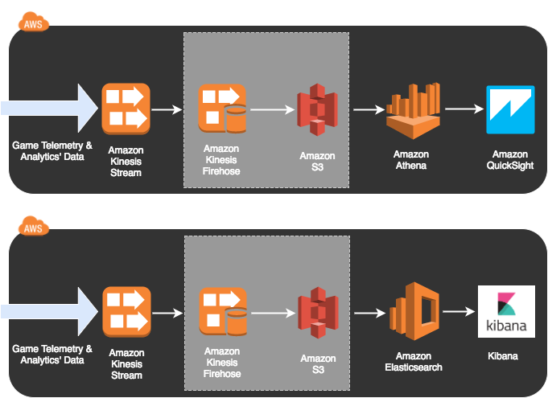

GAM310
Telemetry & Analytics’ Pipelines for Game Balancing
Lab 4 - Big Data Analytics
Lab 4 - Big Data Analytics
In the first lab, you configured Kinesis Streams and a Redshift instance, then configured Kinesis Firehose to pipe data from the Stream to Redshift. You then explored the data in QuickSight.In Lab 2 you will use Athena to see how a serverless approach can still give you interactive SQL access to your game data.
For this lab we're going to use the web console. Please log into the following URL: https://us-west-2.console.aws.amazon.com/athena/home?region=us-west-2

Let's get QuickSight working!